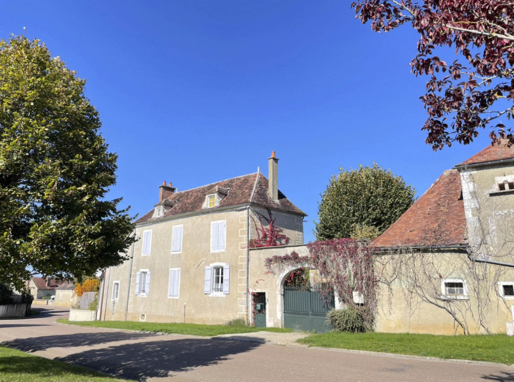
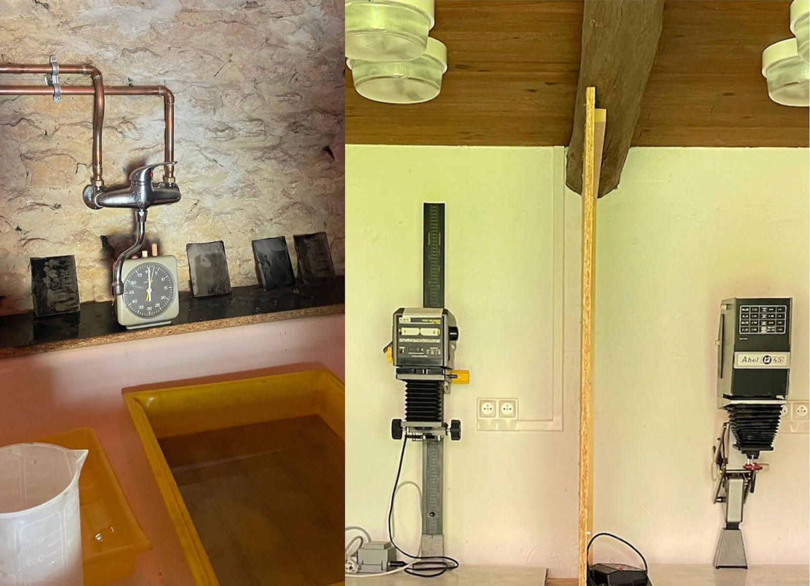
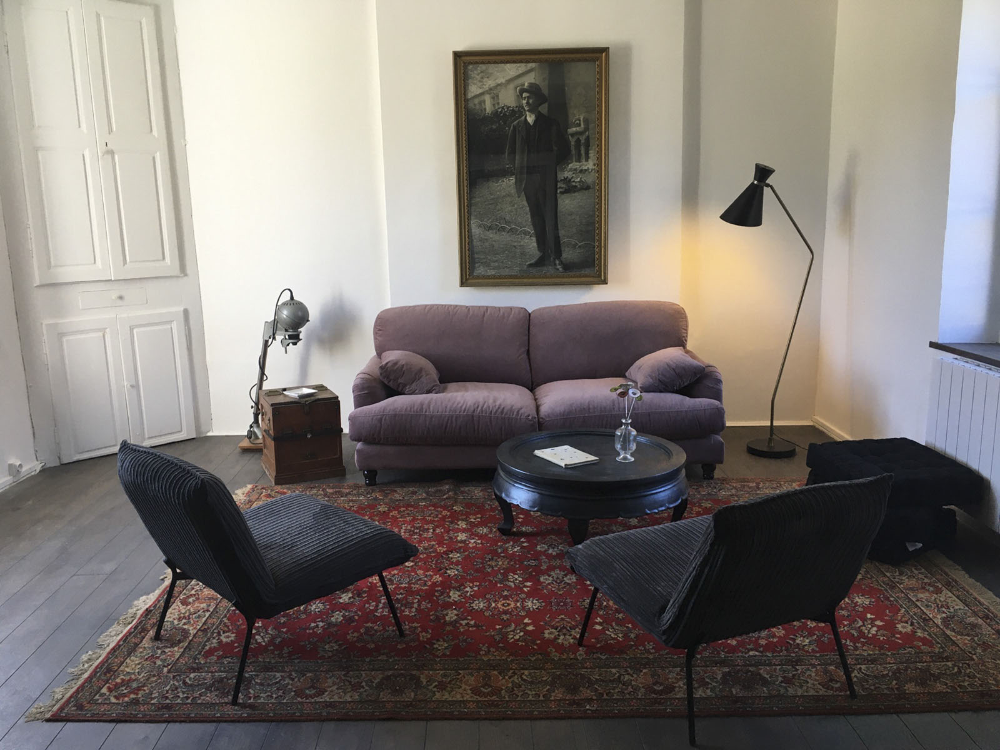
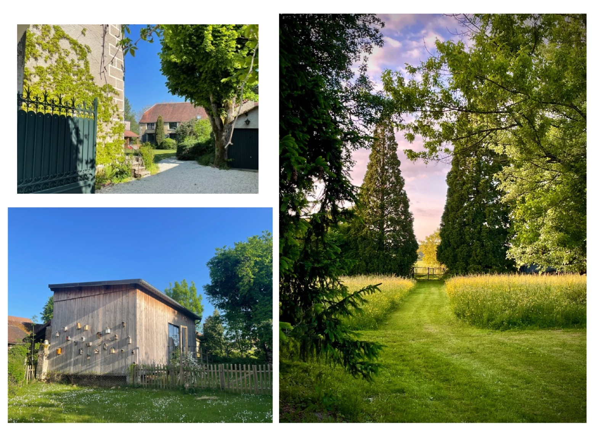

Un lieu à investir, des idées créatives à accompagner et des espaces à partager.




Thierry Beghin, Secrétaire général. Photographe formé aux Gobelins, Thierry a travaillé pour la presse et les entreprises avant de se consacrer à l’enseignement de la prise de vue. Il enseigna d’abord aux Gobelins puis aux Écoles de Condé, en tant que responsable du Bachelor Photographie et Images animées. Parallèlement, il développe un travail de photographe auteur.
Son parcours relie pratique artistique, transmission et formation des nouvelles générations de photographes.
Maison farouche est une association ayant pour but de promouvoir l’art comme vecteur de démocratisation culturelle, de bien-être, d’éducation et de lien social.
Et cela à travers la création, la transmission, l’accompagnement et la valorisation de pratiques artistiques et culturelles sur le territoire rural et accessible à toutes et tous.
Au coeur du village de Lignières dans un écrin de verdure entre champs et forêts en Pays d’Armance. On y retrouve un atelier pluridisciplinaire de 60m2 avec 4m sous plafond, un laboratoire argentique, un duplex autonome mis à disposition des résidents, un gite pouvant accueillir 8 participants et tout cela dans un parc de 2 hectares.
À l’origine du projet
Ingrid Gantner, Présidente. Elle a consacré une part importante de son parcours à la pédagogie et l’accompagnement des artistes. Après avoir enseigné aux Gobelins, elle a créé en 2011 la formation Photographie et Images animées des Écoles de Condé, avant de prendre, en 2023, la coordination nationale de la pédagogie du groupe des écoles d’arts appliqués Condé en France.
Elle apporte à Maison Farouche une ambition de transmission, d’accompagnement de la création émergente et d’ouverture culturelle.
Éric Delamarre, Trésorier, diplômé des Gobelins, Éric a exercé comme photographe, responsable de studio et dirigeant d’une société de production. Il enseigne depuis 1995 les droits et la gestion de l’activité d’auteur, et réalise des ouvrages consacrés à ces questions depuis 2009, il est également conseiller et conférencier.
Il apporte une expertise précieuse sur les réalités économiques, juridiques et professionnelles du métier de photographe.